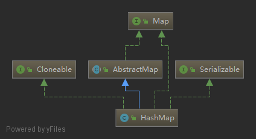

java中提供的Map的实现主要有HashMap、LinkedHashMap、WeakHashMap、TreeMap、ConcurrentHashMap、ConcurrentSkipListMap，另外还有两个比较古老的Map实现HashTable和Properties。
一、HashMap 基础

HashMap采用key/value存储结构，每个key对应唯一的value，查询和修改的速度都很快，能达到O(1)的平均时间复杂度。它是非线程安全的，且不保证元素存储的顺序；
HashMap实现了Cloneable，可以被克隆。
HashMap实现了Serializable，可以被序列化。
HashMap继承自AbstractMap，实现了Map接口，具有Map的所有功能。
二、LinkedHashMap 基础
LinkedHashMap内部维护了一个双向链表，能保证元素按插入的顺序访问，也能以访问顺序访问，可以用来实现LRU缓存策略。
LinkedHashMap可以看成是 LinkedList + HashMap。
LinkedHashMap继承HashMap，拥有HashMap的所有特性，并且额外增加的按一定顺序访问的特性。
LinkedHashMap实现LRU (Least Recently Used，最近最少使用)缓存淘汰策略
1 | package com.coolcoding.code; |
三、WeakHashMap基础
WeakHashMap是一种弱引用map，内部的key会存储为弱引用，当jvm gc的时候，如果这些key没有强引用存在的话，会被gc回收掉，下一次当我们操作map的时候会把对应的Entry整个删除掉，基于这种特性，WeakHashMap特别适用于缓存处理。
WeakHashMap没有实现Clone和Serializable接口，所以不具有克隆和序列化的特性。
（1）WeakHashMap使用（数组 + 链表）存储结构；
（2）WeakHashMap中的key是弱引用，gc的时候会被清除；
（3）每次对map的操作都会剔除失效key对应的Entry；
（4）使用String作为key时，一定要使用new String()这样的方式声明key，才会失效，其它的基本类型的包装类型是一样的；
（5）WeakHashMap常用来作为缓存使用；
四、TreeMap基础
TreeMap使用红黑树存储元素，可以保证元素按key值的大小进行遍历。
TreeMap实现了Map、SortedMap、NavigableMap、Cloneable、Serializable等接口。
SortedMap规定了元素可以按key的大小来遍历，它定义了一些返回部分map的方法。
五、ConcurrentHashMap基础
ConcurrentHashMap是HashMap的线程安全版本，内部也是使用（数组 + 链表 + 红黑树）的结构来存储元素。
五(1) 各种锁简介
（1）synchronized
java中的关键字，内部实现为监视器锁，主要是通过对象监视器在对象头中的字段来表明的。
synchronized从旧版本到现在已经做了很多优化了，在运行时会有三种存在方式：偏向锁，轻量级锁，重量级锁。
偏向锁，是指一段同步代码一直被一个线程访问，那么这个线程会自动获取锁，降低获取锁的代价。
轻量级锁，是指当锁是偏向锁时，被另一个线程所访问，偏向锁会升级为轻量级锁，这个线程会通过自旋的方式尝试获取锁，不会阻塞，提高性能。
重量级锁，是指当锁是轻量级锁时，当自旋的线程自旋了一定的次数后，还没有获取到锁，就会进入阻塞状态，该锁升级为重量级锁，重量级锁会使其他线程阻塞，性能降低。
（2）CAS
CAS，Compare And Swap，它是一种乐观锁，认为对于同一个数据的并发操作不一定会发生修改，在更新数据的时候，尝试去更新数据，如果失败就不断尝试。
（3）volatile（非锁）
java中的关键字，当多个线程访问同一个变量时，一个线程修改了这个变量的值，其他线程能够立即看得到修改的值。（这里牵涉到java内存模型的知识，感兴趣的同学可以自己查查相关资料）
volatile只保证可见性，不保证原子性，比如 volatile修改的变量 i，针对i++操作，不保证每次结果都正确，因为i++操作是两步操作，相当于 i = i +1，先读取，再加1，这种情况volatile是无法保证的。
（4）自旋锁
自旋锁，是指尝试获取锁的线程不会阻塞，而是循环的方式不断尝试，这样的好处是减少线程的上下文切换带来的开锁，提高性能，缺点是循环会消耗CPU。
（5）分段锁
分段锁，是一种锁的设计思路，它细化了锁的粒度，主要运用在ConcurrentHashMap中，实现高效的并发操作，当操作不需要更新整个数组时，就只锁数组中的一项就可以了。
（5）ReentrantLock
可重入锁，是指一个线程获取锁之后再尝试获取锁时会自动获取锁，可重入锁的优点是避免死锁。
其实，synchronized也是可重入锁。
五(2) 优化
（1）CAS + 自旋，乐观锁的思想，减少线程上下文切换的时间；
（2）分段锁的思想，减少同一把锁争用带来的低效问题；
（3）CounterCell，分段存储元素个数，减少多线程同时更新一个字段带来的低效；
（4）@sun.misc.Contended（CounterCell上的注解），避免伪共享；（p.s.伪共享我们后面也会讲的^^）
（5）多线程协同进行扩容；
六、ConcurrentSkipList基础
跳表是一个随机化的数据结构，实质就是一种可以进行二分查找的有序链表。
跳表在原有的有序链表上面增加了多级索引，通过索引来实现快速查找。
跳表不仅能提高搜索性能，同时也可以提高插入和删除操作的性能。
七、关于Map的主要问题
1. 么是散列表？
散列表（Hash table，也叫哈希表），是根据关键码值(Key value)而直接进行访问的数据结构。也就是说，它通过把关键码值映射到表中一个位置来访问记录，以加快查找的速度。这个映射函数叫做散列函数，存放记录的数组叫做散列表。
2. 怎么实现一个散列表？
3. Java中HashMap实现方式的演进？
4. HashMap的容量有什么特点？
默认是16，每次扩容，容量变为之前的2倍，即容量总是2的次幂倍。
5. HashMap是怎么进行扩容的？
（1）如果使用是默认构造方法，则第一次插入元素时初始化为默认值，容量为16，扩容门槛为12；
（2）如果使用的是非默认构造方法，则第一次插入元素时初始化容量等于扩容门槛，扩容门槛在构造方法里等于传入容量向上最近的2的n次方；
（3）如果旧容量大于0，则新容量等于旧容量的2倍，但不超过最大容量2的30次方，新扩容门槛为旧扩容门槛的2倍；
（4）创建一个新容量的桶；
（5）搬移元素，原链表分化成两个链表，低位链表存储在原来桶的位置，高位链表搬移到原来桶的位置加旧容量的位置；
6. HashMap中的元素是否是有序的？
无序的，且不保证顺序不变；
7. HashMap何时进行树化？何时进行反树化？
当桶中的链表长度大于8时，且数组的容量大于64时，链表会进行树化(treeifyBin)，红黑树的查询效率是O(log n)；链表长度大于8，但是数组容量未达到64，会对数组进行扩容。
8. HashMap是怎么进行缩容的？
9. HashMap插入、删除、查询元素的时间复杂度各是多少？
O(1)；链表O(n)；红黑树O(log n)；
10. HashMap中的红黑树实现部分可以用其它数据结构代替吗？
TreeMap使用红黑树存储元素；
11. LinkedHashMap是怎么实现的？
LinkedHashMap内部维护了一个双向链表，能保证元素按插入的顺序访问，也能以访问顺序访问，可以看成是 LinkedList + HashMap。
12. LinkedHashMap是有序的吗？怎么个有序法？
是；
- 添加了一种“双向链表”的结构存储所有元素的顺序，
- head双向链表的头节点，旧数据存在头节点，
- tail双向链表的尾节点，新数据存在尾节点，
- accessOrder是否需要按访问顺序排序，如果为false则按插入顺序存储元素，如果是true则按访问顺序存储元素，
- 存储节点，继承自HashMap的Node类，next用于单链表存储于桶中，before和after用于双向链表存储所有元素。
13. LinkedHashMap如何实现LRU缓存淘汰策略？
将accessOrder设置为true（按访问顺序存储元素），重写removeEldestEntry方法。
14. WeakHashMap使用的数据结构？
WeakHashMap的存储结构只有（数组 + 链表）
15. WeakHashMap具有什么特性？
WeakHashMap是一种弱引用map，内部的key会存储为弱引用，当jvm gc的时候，如果这些key没有强引用存在的话，会被gc回收掉，下一次当我们操作map的时候会把对应的Entry整个删除掉
16. WeakHashMap通常用来做什么？
WeakHashMap特别适用于缓存处理。
17. WeakHashMap使用String作为key是需要注意些什么？为什么？
使用String作为key时，一定要使用new String()这样的方式声明key，才会生效，其它的基本类型的包装类型是一样的；
18. 什么是弱引用？
（1）强引用
使用最普遍的引用。如果一个对象具有强引用，它绝对不会被gc回收。如果内存空间不足了，gc宁愿抛出OutOfMemoryError，也不是会回收具有强引用的对象。
（2）软引用
如果一个对象只具有软引用，则内存空间足够时不会回收它，但内存空间不够时就会回收这部分对象。只要这个具有软引用对象没有被回收，程序就可以正常使用。
（3）弱引用
如果一个对象只具有弱引用，则不管内存空间够不够，当gc扫描到它时就会回收它。
（4）虚引用
如果一个对象只具有虚引用，那么它就和没有任何引用一样，任何时候都可能被gc回收。
软（弱、虚）引用必须和一个引用队列（ReferenceQueue）一起使用，当gc回收这个软（弱、虚）引用引用的对象时，会把这个软（弱、虚）引用放到这个引用队列中。
19. 红黑树具有哪些特性？
（1）每个节点或者是黑色，或者是红色。
（2）根节点是黑色。
（3）每个叶子节点（NIL）是黑色。（注意：这里叶子节点，是指为空(NIL或NULL)的叶子节点！）
（4）如果一个节点是红色的，则它的子节点必须是黑色的。
（5）从一个节点到该节点的子孙节点的所有路径上包含相同数目的黑节点。
20. TreeMap就有序的吗？怎么个有序法？
SortedMap规定了元素可以按key的大小来遍历。
21. TreeMap是否需要扩容？
不需要，红黑树结构，不需要扩容。
22. 什么是左旋？什么是右旋？
23. 红黑树怎么插入元素？
24. 红黑树怎么删除元素？
25. 为什么要进行平衡？
插入的元素默认都是红色，因为插入红色元素只违背了第4条特性，那么我们只要根据这个特性来平衡就容易多了。
插入的元素如果是根节点，则直接涂成黑色即可，不用平衡；
插入的元素的父节点如果为黑色，不需要平衡；
插入的元素的父节点如果为红色，则违背了特性4，需要平衡，平衡时又分成下面三种情况：
26. 如何实现红黑树的遍历？
27. TreeMap中是怎么遍历的？
（1）寻找第一个节点；从根节点开始找最左边的节点，即最小的元素。
（2）循环遍历后继节点；寻找后继节点这个方法我们在删除元素的时候也用到过，当时的场景是有右子树，则从其右子树中寻找最小的节点。
28. TreeMap插入、删除、查询元素的时间复杂度各是多少？
29. HashMap在多线程环境中什么时候会出现问题？
HashMap是非线程安全的，主要表现在：当需要扩容时，线程1得到一个元素的引用，此时线程1被刮起，线程2执行扩容，完成扩容后，线程1继续执行，此时之前的元素的next指针的元素可能已经变成这个的元素的前驱元素，形成互相引用的循环，当获取这个元素的值时，会导致死循环。
30. ConcurrentHashMap的存储结构？
ConcurrentHashMap是HashMap的线程安全版本，内部也是使用（数组 + 链表 + 红黑树）的结构来存储元素。
31. ConcurrentHashMap是怎么保证并发安全的？
如果待插入的元素所在的桶不为空且不在迁移元素，则锁住这个桶（分段锁）
32. ConcurrentHashMap是怎么扩容的？
33. ConcurrentHashMap的size()方法的实现知多少？
34. ConcurrentHashMap是强一致性的吗？
查询操作是不会加锁的，所以ConcurrentHashMap不是强一致性的；
35. ConcurrentHashMap不能解决什么问题？
1 | private static final Map<Integer, Integer> map = new ConcurrentHashMap<>(); |
这里如果有多个线程同时调用unsafeUpdate()这个方法，ConcurrentHashMap还能保证线程安全吗？
答案是不能。因为get()之后if之前可能有其它线程已经put()了这个元素，这时候再put()就把那个线程put()的元素覆盖了。
那怎么修改呢？
答案也很简单，使用putIfAbsent()方法，它会保证元素不存在时才插入元素，如下：
1 | public void safeUpdate(Integer key, Integer value) { |
36. ConcurrentHashMap中哪些地方运用到分段锁的思想？
添加、删除元素；
扩容迁移元素时会锁住当前桶，也是分段锁的思想；
37. 什么是伪共享？怎么避免伪共享？
38. 什么是跳表？
跳表是一个随机化的数据结构，实质就是一种可以进行二分查找的有序链表。
跳表在原有的有序链表上面增加了多级索引，通过索引来实现快速查找。
跳表不仅能提高搜索性能，同时也可以提高插入和删除操作的性能。
40. ConcurrentSkipList是有序的吗？
不是；
41. ConcurrentSkipList是如何保证线程安全的？
42. ConcurrentSkipList插入、删除、查询元素的时间复杂度各是多少？
43. ConcurrentSkipList的索引具有什么特性？
44. 为什么Redis选择使用跳表而不是红黑树来实现有序集合？
Redis的有序集合支持的操作：
1）插入元素
2）删除元素
3）查找元素
4）有序输出所有元素
5）查找区间内所有元素
其中，前4项红黑树都可以完成，且时间复杂度与跳表一致。
但是，最后一项，红黑树的效率就没有跳表高了。
在跳表中，要查找区间的元素，我们只要定位到两个区间端点在最低层级的位置，然后按顺序遍历元素就可以了，非常高效。
而红黑树只能定位到端点后，再从首位置开始每次都要查找后继节点，相对来说是比较耗时的。
此外，跳表实现起来很容易且易读，红黑树实现起来相对困难，所以Redis选择使用跳表来实现有序集合。